1440px viewport
Homepage — retain the identity
The established palette, co-founder composition, impact procession and contribution section remain intact. This is a consistency pass, not a replacement homepage.
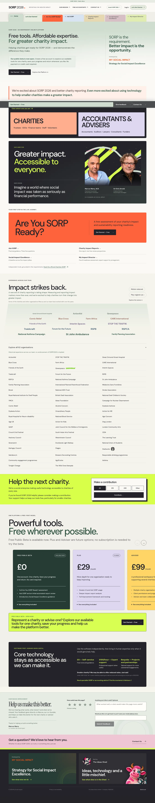
My Social Impact · Design and quality assurance · 16 November 2026
A clearer, more consistent platform, with verified visual improvements and an explicit limit on what has been proven.
Open the review Preview → · Review the implementation branch
A · Executive assessment
The baseline’s strongest assets were its distinctive colours, founder presence, recognisable product tabs and clear commitment to accessible tools. Those are preserved. The weaknesses addressed here were uneven hero spacing, repeated account messaging, crowded headline treatments, a weak returning-user form and navigation overflow at tablet and intermediate widths.
The most substantial visual refinement is My Impact Director: a shorter explanation, controlled typography and an intentional action group. Ask SORP now foregrounds plain-English guidance and source references. Find Accountants gives Marcus’s introduction a clearer place in the composition. Onboarding states its minimum requirements concisely, without changing the conversation or account architecture.
Screenshots were captured from local production builds: baseline main commit 04de6ef and this review branch. They are actual browser renders, not mock-ups. Public screens use real page content; protected journey screens use explicitly synthetic accounts or controlled API responses. These are simulated persona reviews, not user interviews.
This is a second-pass self-critique, not an independent human audit. A perfect design score would not establish production reliability.
B · Actual rendered comparisons
Each panel scrolls through the full captured page. Select an image to open it at larger size. Viewport width is stated above each pair.
Full-page captures retain fixed and sticky controls at the position they occupied in the browser viewport; they are not embedded mid-page elements. Directory map tiles were blocked by this environment in both audits; the existing fallback and firm list remain visible. Imagery and animations were allowed to render, with reduced motion enabled for repeatable captures.
1440px viewport
The established palette, co-founder composition, impact procession and contribution section remain intact. This is a consistency pass, not a replacement homepage.

768px viewport
The baseline 768px page was 822px wide. Product tabs now scroll within their own container; the page fits the viewport. Footer cards stack at tablet width so their text has room.
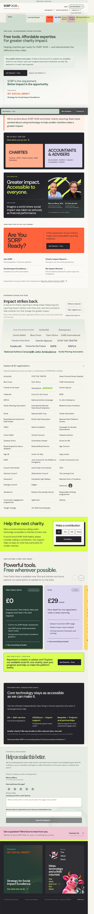
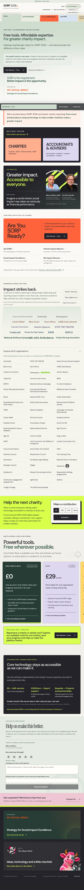
1440px viewport
The opening now states the one-charity, saved-work proposition once. The connection choices are explicitly optional. The shared conversation/form, charity confirmation and optional fields remain.
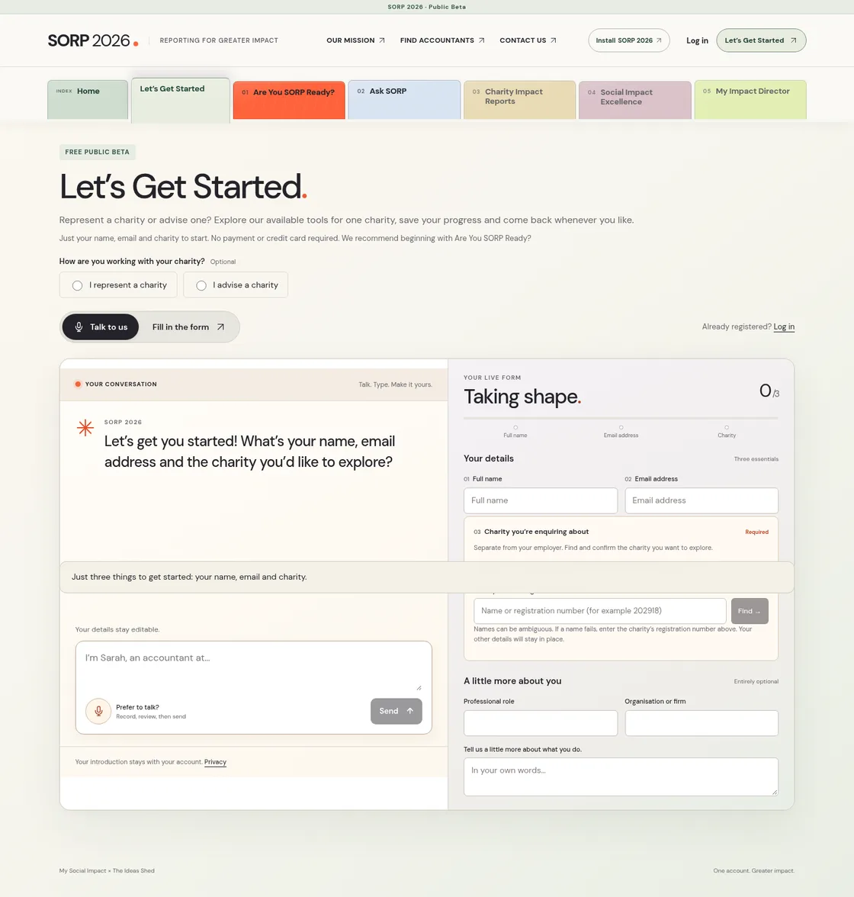
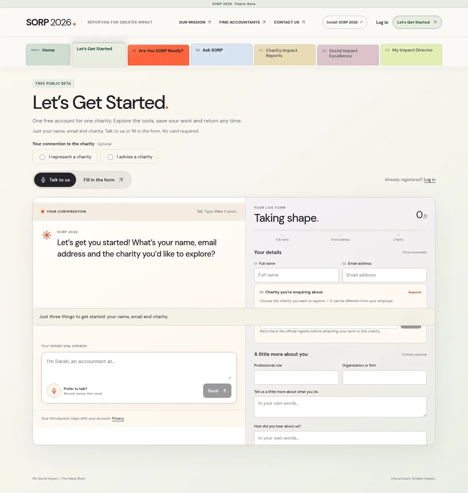
375px viewport
Two compact audience choices replace the taller arrangement. Name, email and confirmed charity remain the essentials; optional context stays editable. No registration rules were changed.
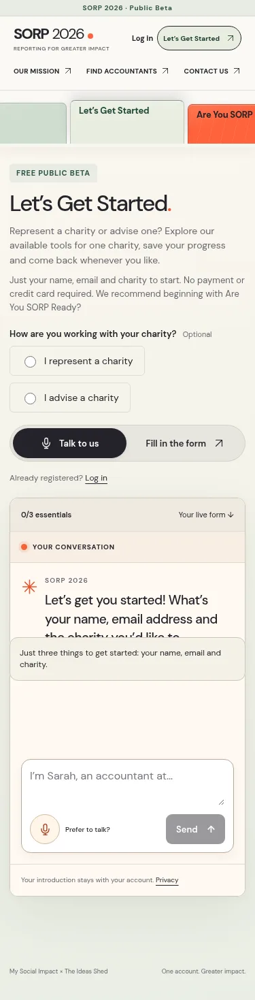
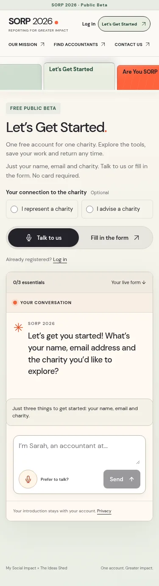
1440px viewport
A shorter lead and explicit distinction between the free assessment and separately arranged human support. The CTA and account note have a consistent gap; the cow and brand personality remain.
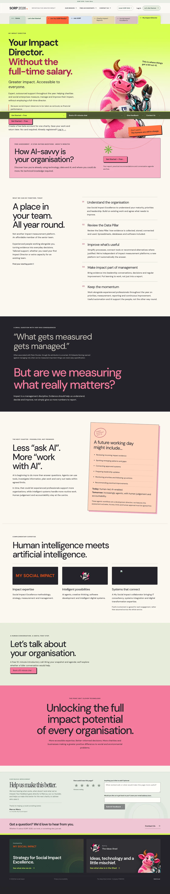
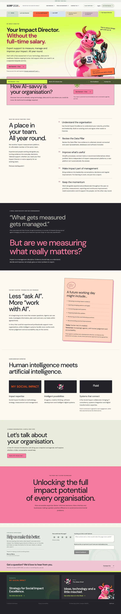
375px viewport
The smaller headline has more comfortable leading. The primary action sits in a deliberate group. The partner link uses readable text instead of depending on an externally hosted image.
1440px viewport
Plain-English questions and source references lead. Three free questions and planned paid access remain explicit. The illustration cards no longer crowd each other.
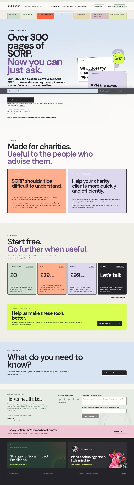
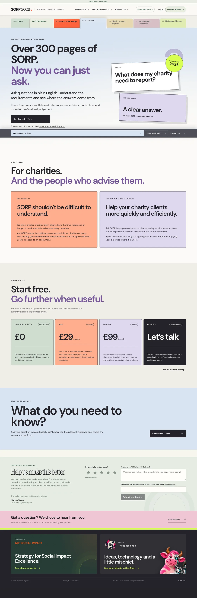
430px viewport
The headline has calmer line spacing, the illustration has clearance for its badge, and audience cards retain equal prominence when stacked.
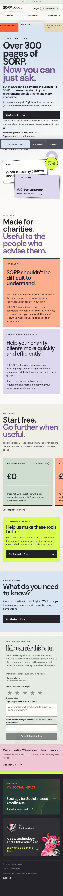
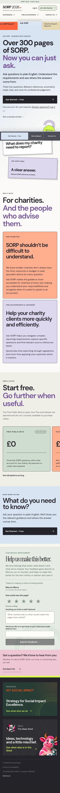
1440px viewport
A restrained type scale and shared action/account-note spacing. The distinction between the 25-question maturity assessment and deeper stages requiring separate access remains visible.
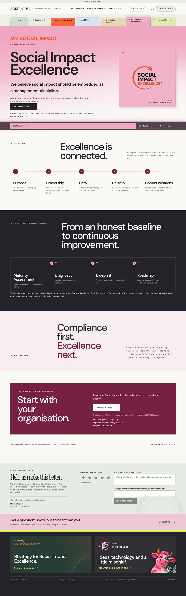
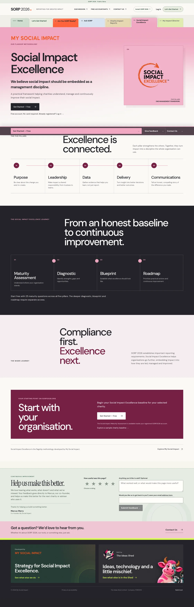
1440px viewport
The two established frameworks and report workflow remain. The shared entry treatment is consistent with the other tools. No analysis or scoring logic was changed.
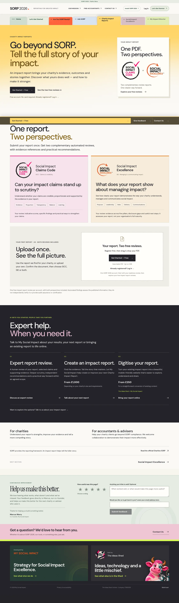
1440px viewport
A readable headline, shorter copy, a larger straight portrait card and a clear email invitation. Public browsing and the directory’s in-development status remain explicit; no professional endorsement is implied.
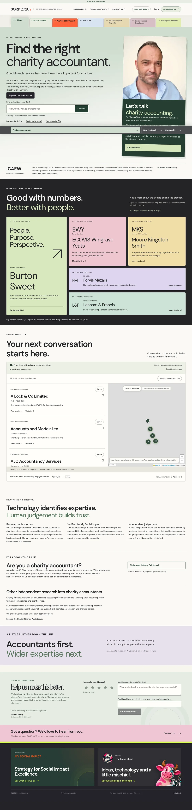
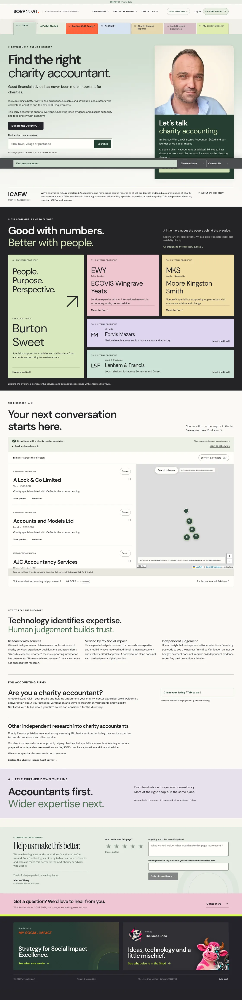
430px viewport
The portrait, introduction and action read as one section. Search, the firm list and existing map-unavailable fallback remain usable without registration.
375px viewport
Labels and inputs are easier to read, with 16px input text. Legacy account guidance remains available in a secondary disclosure, rather than competing with the sign-in action.
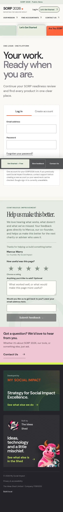
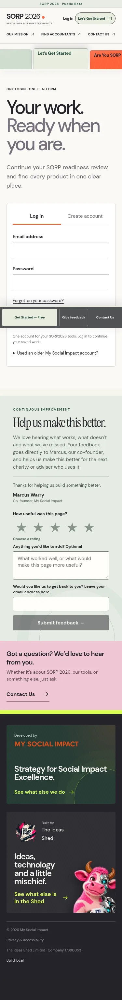
1440px viewport
The demo request card now has the intended internal padding. Its form and submission behaviour are preserved.
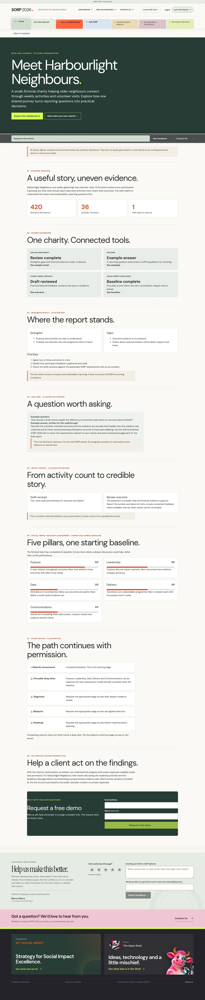
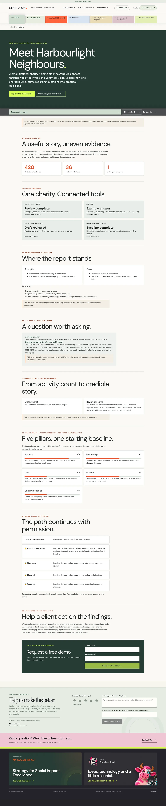
C · Evidence-based quality scorecard
Visual scores below are provisional editorial judgements about the inspected renders. They are not evidence of live service behaviour. Two categories cannot responsibly receive a complete score until their critical journeys are verified.
| Category | Score | Evidence, improvement and remaining limits |
|---|---|---|
| Visual design and art direction | 19 / 20 | Whole-page captures across 15 routes. Better hero balance, separated illustration cards, integrated founder portrait and deliberate CTA groups. The original identity is intact; some long editorial pages remain dense by design. |
| First-time visitor clarity | 19 / 20 | Free account, one charity, no card and saved work are explicit. Product purposes and separate human services are clearer. Charity/adviser paths were simulated; no actual user interviews were conducted. |
| Navigation and user journeys | Not fully rated / 15 | Keyboard tabs, all five entrance gates and synthetic login-return checks passed. Real registration, returning-account persistence and founder access remain unverified. |
| Typography, spacing and consistency | 14.5 / 15 | Shared CTA rhythm, controlled headline scales, readable account forms and tablet footer composition. Screenshots show the changes at all five target sizes; no exhaustive copy-by-copy typography review is claimed. |
| Mobile and responsive quality | 9 / 10 | 375/430/768/1440/1920 captures, plus 900/1024/1280 interaction checks. The identified overflow is removed. These are Chromium viewports; real iPhone Safari and device keyboard behaviour were not tested. |
| Copy and content clarity | 9.5 / 10 | Shorter invitations, optional fields identified and planned/access-limited features distinguished. Prices and allowances were preserved. Published source claims were not independently re-audited in this design pass. |
| Accessibility and functionality | Not fully rated / 10 | No axe WCAG A/AA violations in sampled public pages and manual forms; keyboard focus, reduced motion, validation and controlled error states tested. Live services, real voice transcription, assistive-technology use and production persistence remain unverified. |
| Total | No overall grade | 71 points provisionally supported in categories worth 75. The remaining 25 points are unscored, not assumed passed. The required 95/100 release threshold has not been established. |
D · User journey verification
| Journey | Result | Scope of the evidence |
|---|---|---|
| Charity representative | Isolated pass | Homepage → central onboarding → representative choice → blank optional fields → synthetic registry confirmation → synthetic account → readiness. Saved charity present in isolated account response. This is not proof of a production account or database record. |
| Accountant/adviser | Isolated pass | Adviser selection at mobile width; the same shared registration form, charity confirmation and account route. Logged-in actions no longer ask the synthetic user to register. Existing permissions preserved. |
| Return to saved work | Controlled pass | Start/Continue/View Results labels checked against controlled account states. Isolated logout/login returned to Ask SORP. Readiness test restored a controlled saved report without a second registration interruption. |
| Find an accountant | Browser pass | Public directory search found Burton Sweet; Marcus’s image loaded and his email link matched the intended address. No email was sent. External map tiles could not load on this network; fallback and list remained available. |
| Accountant participation | Link verified | In-development explanation, ACA identification and direct email invitation are visible. No endorsement or guaranteed quality claim added. Email delivery intentionally not exercised. |
| Are You SORP Ready? | Controlled pass | All 19 answers, forward/back navigation, historical/current results, priorities, prepared-report reuse and controlled saved-result recovery at 390px and 1440px. Email sending was intercepted, not delivered. |
| Charity Impact Reports | Controlled pass | Document confirmation, both framework result views, switching without rerunning, returning to saved results and enquiry UI. Source AI assessment and real storage were not retested. |
| Social Impact Excellence | Blocked | Public layout and logged-out gating inspected. Protected isolated screens reached an access-service 503. The complete authenticated diagnostic journey could not be exercised. |
| Director / Ask workspaces | Layout inspected | Synthetic-account workspace entry and empty states at 375/768/1440. Real AI, calendar booking and payment completion are unverified; no test bookings or payments were submitted. |
| Founder Control Centre | Unverified | No verified founder test session was available. No role, permission or founder-routing implementation was changed. |
A final rerun of the beta journey completed its assertions through login at the first viewport, then failed the “no page errors” assertion on “Failed to load Stripe.js”. The earlier full 390/1440 run passed. The rerun is recorded as failed, not silently discarded; external Stripe access is restricted here.
E · Design consistency
F · Responsive, accessibility and regression evidence
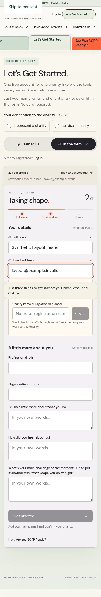
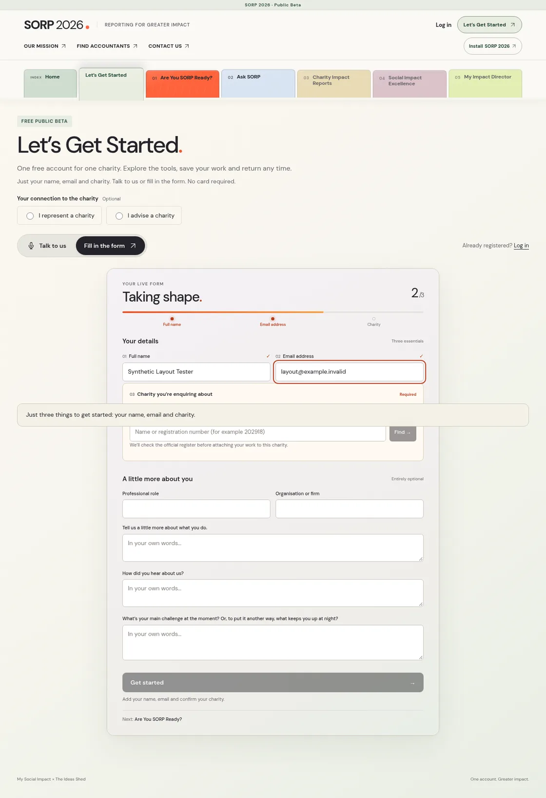
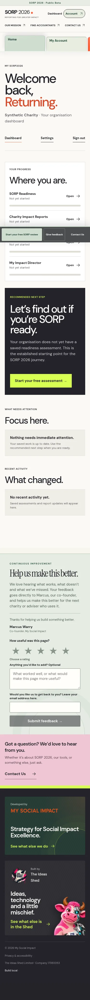
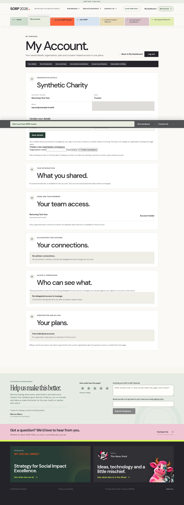
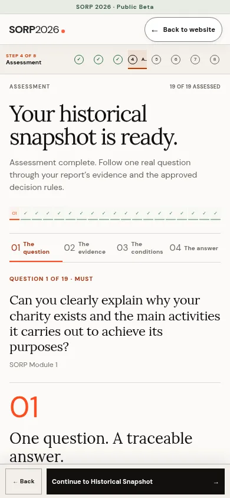
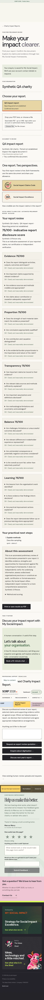
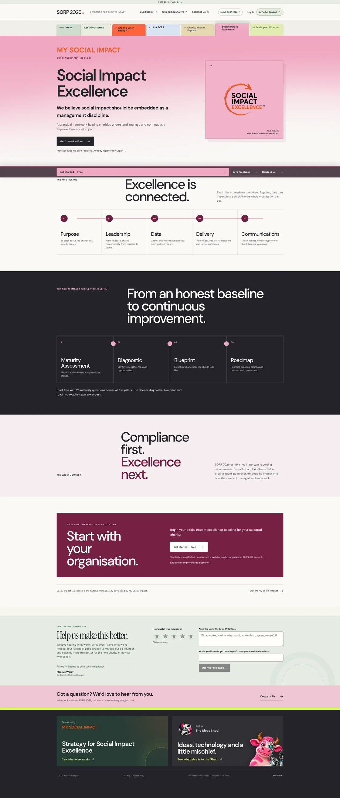
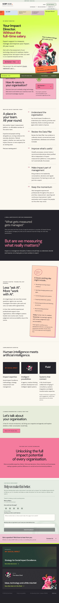
Baseline audit · Final public audit · Eight-width checks · Protected-view checks
Unit tests · Onboarding browser tests · Isolated beta journeys · Final rerun failure · Readiness journey · Impact review · Report entry · Build · Lint
G–I · Blockers, production verification and verdict
Production remains Build 88. The live metadata endpoint returned production build 88, deployed 16 November 2026 at 08:40:34 UK time (GMT). Main remains at the pre-existing release; this branch has not been merged or promoted.
The review branch has a successful Vercel Preview deployment. Its public page content and build metadata were checked through the Vercel connector. Direct interactive browser access to sorp2026.org and the Preview host is blocked by this environment’s enforced outbound allowlist. No live test credentials or connected desktop browser are available. A connector GET response does not establish a working authenticated journey.
| Release gate | Status | Reason |
|---|---|---|
| 1 · Visual quality | Passed in inspected scope | Identified spacing, collision and overflow problems corrected and recaptured. Not a claim about every dynamic backend state. |
| 2 · First-time clarity | Simulated pass | Both persona paths and public copy reviewed; no user-interview evidence claimed. |
| 3 · Functional reliability | Blocked | Real registration, authentication, saved-progress durability, AI and SIE access cannot be verified here. |
| 4 · Mobile quality | Viewport pass | Small mobile and responsive checks passed in Chromium. Real iPhone Safari remains unverified. |
| 5 · Credibility | Inspected copy passed | Planned tiers, directory development and separate advisory services remain explicit; no commercial promises added. |
| 6 · Independent critical assessment | Not established | Iterative self-critique completed, but the complete score and all critical service checks are not evidenced. |
The completed Website checks run for af394f0 failed in two jobs: the production dependency audit reported eight advisories (five high, two moderate, one low), including undici and Zod; and the legacy account-export test returned 503 where its fixture expected 200. The research-console job passed, as did the separate onboarding-engine workflow. These are additional release blockers, not passing checks.
The dependency lockfile is byte-for-byte identical to main, and the export implementation and test were not changed by this UI pass. No dependency upgrade or legacy migration has been attempted here. Full CI, including these failures, must be resolved before release; the local test results above do not override it.
An execution environment able to browse SORP/Preview and its existing authentication, AI and payment-provider endpoints, plus an authorised isolated test account or safe test-registration setup. Then the real charity/adviser sign-up → save → sign-out → sign-in → resume journeys, SIE access and remaining service checks can be completed without emailing customers. This is an access requirement, not a request for routine founder design QA.
Map imagery and the Stripe.js load failure are recorded as environment limitations, not proven production outages. The prototype/local fixture is not being presented as a fully verified live platform.
The inspected design is materially clearer and more coherent, and the obvious defects found in this review have been corrected. The branch is ready to inspect. It is not yet defensible to call the complete platform a verified 95/100 release.
Your brief requires critical reliability checks before production. Holding release is the evidence-based decision until those checks can be completed. No customer emails, invitations, bookings or payments were sent during this work.